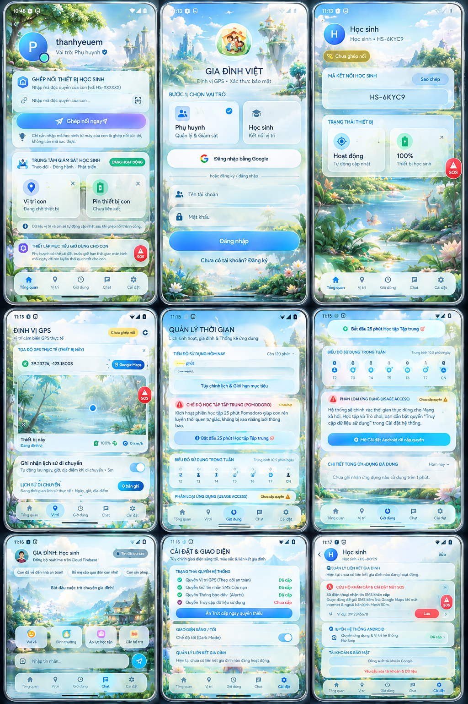
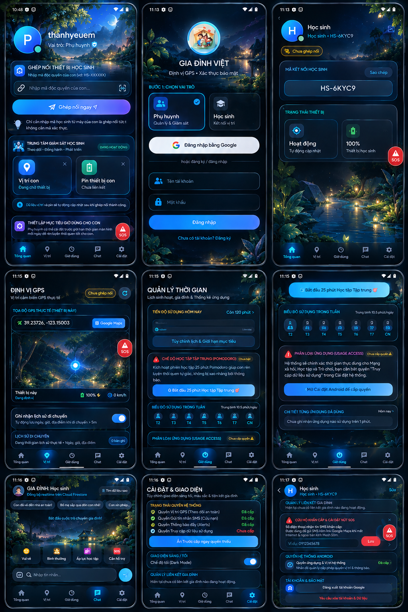

Nội quy hai bên
Bên đề xuất không tự thông qua phiếu của mình; đang mở thì không ghi đè.
Bản 40.0 · Android 7.0 trở lên · build debug
Phụ huynh ghép máy con qua Firebase. Danh sách chặn, khung giờ và hạn mức phút phải được bên kia bấm Đồng ý mới có hiệu lực; mọi lần đổi đều ghi vào nhật ký không sửa được.

Bên đề xuất không tự thông qua phiếu của mình; đang mở thì không ghi đè.
Lớp 1: app bị tích. Lớp 2: quá khung giờ hoặc hết hạn mức phút thì chặn mọi app ngoài danh sách miễn chặn.
Launcher, bàn phím, gọi khẩn cấp, CH Play, Play Services luôn nằm ngoài danh sách chặn.
Đọc UsageStats từ nửa đêm tới hiện tại, chạy ngoài luồng chính; biểu đồ tuần tô đúng ô hôm nay.
Thẻ bản đồ 5 lớp nền đã đo tile thật, làm mới khi có điểm mới, có chế độ riêng tư và đánh dấu điểm quá cũ.
Chat giữa hai máy đã ghép nối, kèm tiện ích SOS gửi báo động kèm vị trí.

Cùng logic chạy trên điện thoại (BlockPolicy.blockReason()), tính ngay trong trình duyệt. Đổi các ô để biết app bị chặn hay được chạy.
App ghi bản tóm tắt cho từng ngày rồi gửi kèm vào mỗi câu hỏi. Mô hình chỉ nói về con số máy đo được, không tự bịa chuyện nhà bạn.
Phút dùng, hạn mức đã duyệt, số lần bị kéo về Home, app dùng nhiều nhất, tỉ lệ theo nhóm, điểm vị trí, cảm xúc trẻ tự đánh dấu. Kèm 7 ngày trước để thấy xu hướng.
Bộ đếm tăng đúng khi AccessibilityService gọi GLOBAL_ACTION_HOME thành công — không lấy từ danh sách app bị tích.
Bản ghi nằm trong SharedPreferences của máy, không đẩy lên Firestore. Nội dung gửi đi là số liệu gộp.
Gemini (AI Studio) và ba model qua OpenRouter; mỗi khoá nhập một lần trên máy, có thể tiêm lúc build qua Repository Secret. Không khoá nào nằm trong repo.
Cần Internet; mỗi câu hỏi tốn token theo giá nhà cung cấp. Câu trả lời là gợi ý tham khảo, không phải chẩn đoán. Khoá API nằm trong APK giải mã được là rủi ro có thật, nên app mặc định yêu cầu nhập khoá trên máy.
APK do GitHub Actions build từ một commit: test trước, biên dịch sau, rồi mới đăng file. File tồn tại nghĩa là test đã xanh.
Xác thực bạn là người trước khi tải
Token sẽ được gửi lên máy chủ để Cloudflare kiểm tra. Chỉ khi máy chủ trả “hợp lệ” liên kết tải mới hiện.
Đường dẫn APK nằm trên GitHub Release công khai, nên ai biết URL vẫn tới được file. Cloudflare Turnstile chặn bot ở trang này — người thật tải qua đường sạch, không quảng cáo; đây là chốt cửa nhà, không phải két sắt.
| Phiên bản | 40.0 (tag v40) · com.aistudio.vesperafamily.vspxql |
|---|---|
| Link tải | releases/download/v40/GiaDinhViet.apk |
| Kích thước | 79.829.768 byte · 76,1 MiB |
| SHA-256 | 2d49a936…95a905d |
| SHA-256 đầy đủ | 2d49a936d8f6e4676df5d894c50ddc1daf49eb4e651c5b6c7abbb29ba95a905d |
| SHA-1 | cebcc1d2c4720a42895c41f3613d1993892167ab |
Chọn GiaDinhViet.apk trong Downloads. Trình duyệt tự tính SHA-1/SHA-256 bằng Web Crypto và so với giá trị công bố — file không rời khỏi máy bạn.
File 76 MiB nên phép tính mất vài giây tới vài chục giây tùy máy. Hãy lấy giá trị gốc từ chính trang release.
INSTALL_FAILED_UPDATE_INCOMPATIBLE thì gỡ bản cũ rồi cài lại.Thẻ vị trí dùng osmdroid, tải tile ảnh gốc. 9 ô dưới đây là tile thật mà app xin, không phải ảnh chụp sẵn.
Đang tải 9 tile 256×256 px.